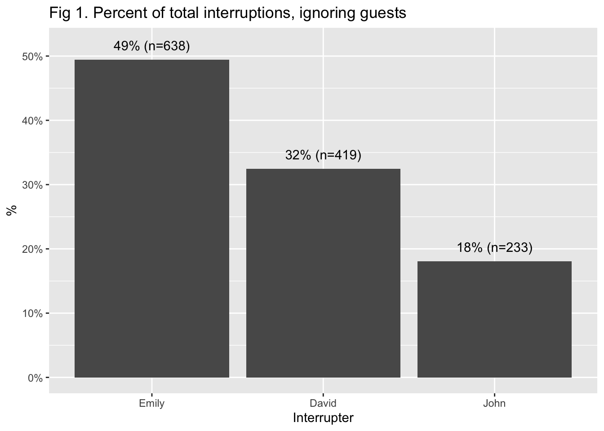
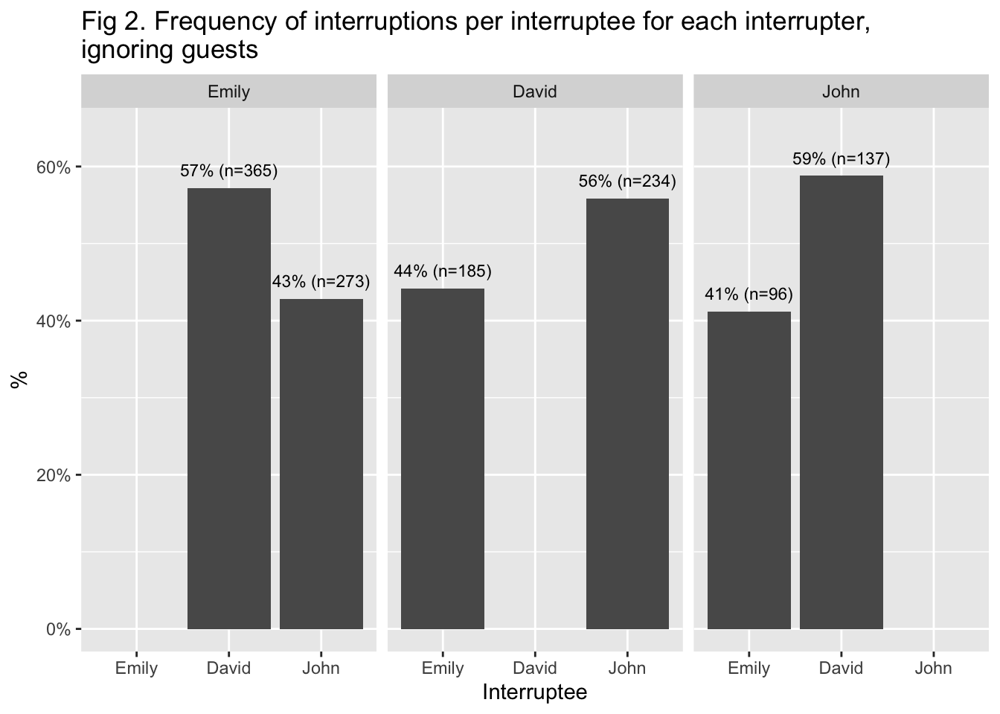
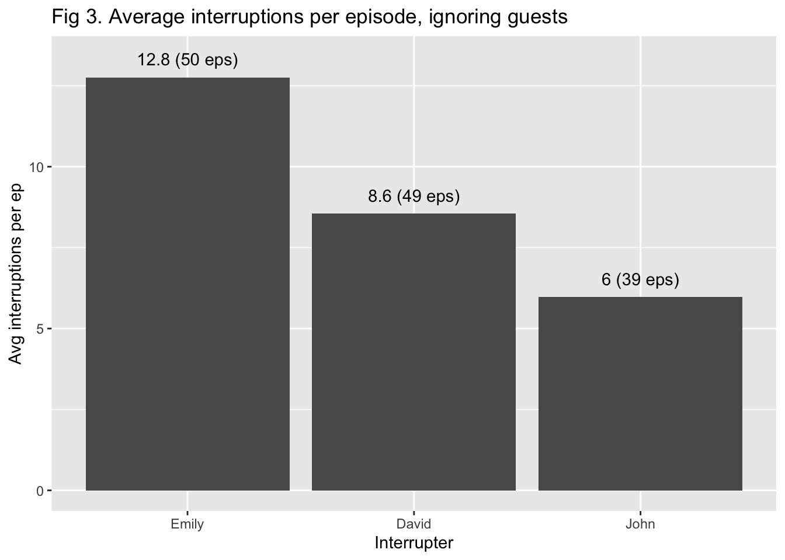
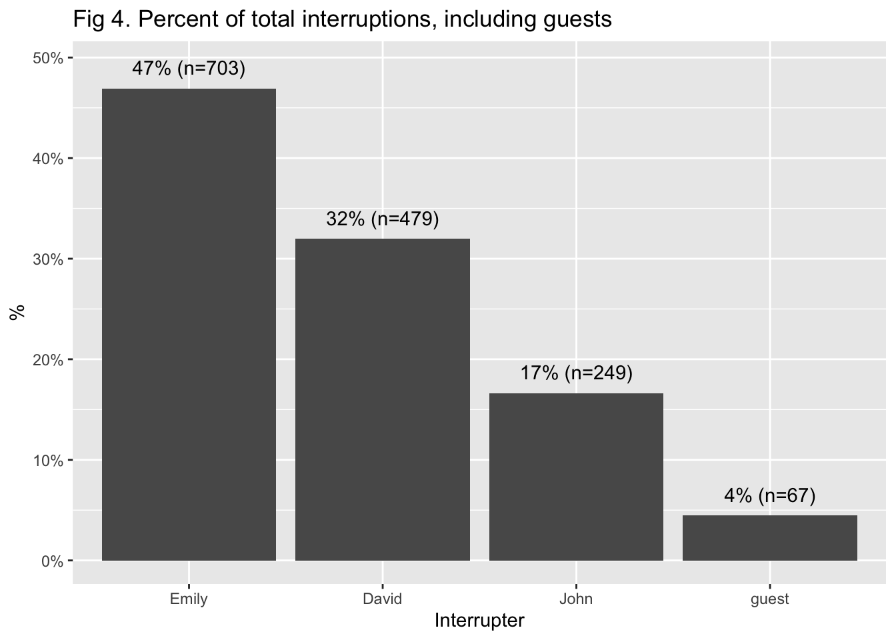
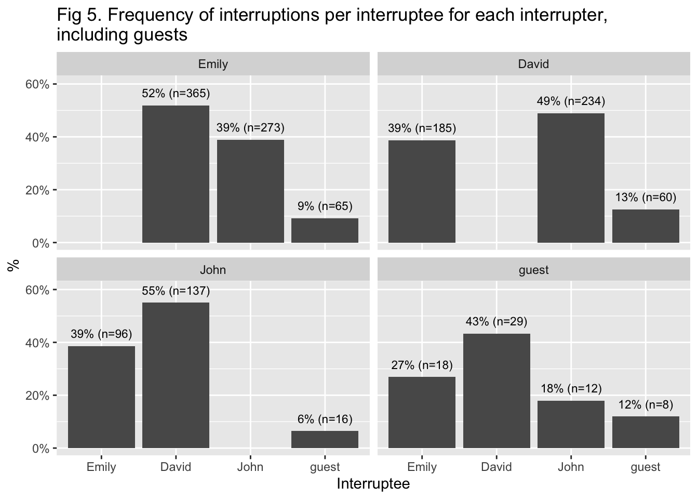
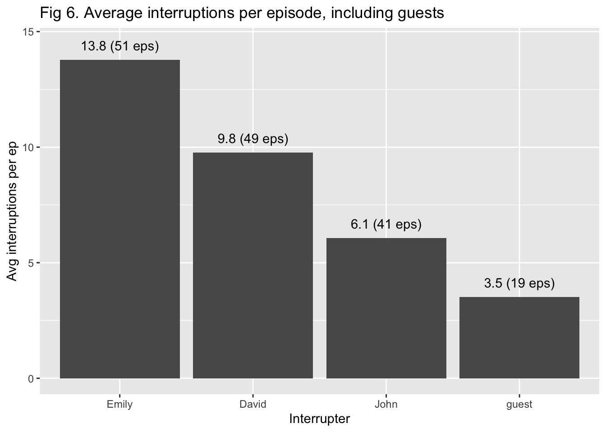

I love Slate’s Political Gabfest podcast. One fateful day I told my dear friend Kathleen, “I think I want to start getting in to podcasts.” She emphatically recommended the show, and I’ve been a devoted listener ever since. All of my political opinions come from the discussions the hosts Emily Bazelon, David Plotz, and John Dickerson have each week.
But in 2016, I became fed up with how often I felt like David interrupted Emily. In a fit of feminist rage, fueled by anxiety over the looming election and restlessness having just started a new job in a new country, I decided to respond the only way a dork with a statistics degree knows how: collect data.
So from June 2016 to June 2017 (for 55 episodes), every week I listened to the episodes in front of my computer and noted each interruption using a simple program I wrote in R. After a year of data collection, I did some basic analysis and found that, actually, Emily is the greatest interrupting-offender by just about every metric, and David actually gets interrupted the most by everyone. More on this below.
With my feminist rage undermined and my general inability to follow through on personal projects (see my last blog post from 3 years ago—spoiler alert: I never contacted Geneva’s transport company), I never did anything with the data…until a couple of weeks ago, when in an episode of the podcast (starting around 1:11:00) Emily, David, and John were joking around about how much they interrupt each other.
I thought: this is my time. I threw together the results in a short report and sent it to the podcast team. I quickly heard back that the results provided a great deal of amusement, and they encouraged me to finally write this post. (Update 10/21: WHOA they did a whole brilliant and nuanced Slate Plus segment on this analysis in this episode—definitely subscribe and check it out!)
So here are some details on this quasi-scientific, obsessive experiment, 5 years too late. You can find the code for the function I used to capture results, the data, and the brief report in my GitHub repository (note to any future employers: I’m much better at coding now than I was then).
Methods
Before collecting data, I formulated a definition of interruption:
one person talks over another with the purpose of making their own point
may or may not cause the other person to stop talking
excludes exclamations or conversational modes of emphasis (eg “right,” “yeah,” “that’s interesting”)
I collected data from 55 episodes from June 17, 2016 to June 8, 2017 using a short function I wrote in R. I would start to play the podcast and run the function at the same time. The function then starts an internal stopwatch and waits for user input to capture the interruptions. The input would be a 3-character string, with the first character representing the interrupter, the second character the interruptee, and the third character an indication of whether or not it was a “normal” conversation or an “argument.” (I don’t think I well-defined the difference between a normal conversation and an argument, so I mostly ignored that data in my analysis.) As I listened to the podcast, if I heard Emily interrupt David in the course of a normal conversation I would enter “edn” into the console. If David interrupted Emily in the middle of an argument, I would enter “dea”. The function would then parse that string into a 4 column data table: time in seconds, interrupter, interuptee, and conversation type. I also built in functionality to allow me to pause the podcast as I listened and indicate where the ad breaks were.
With the year’s worth of data in hand, I just did various frequency tables to compare frequency and rates of interruption.
Results
If we ignore interruptions on/by guests to the podcast we see:
Emily performs nearly half of all interruptions in the podcast (Fig 1)
Both John and Emily interrupt David the most often, and David interrupts John the most often (Fig 2)
Emily has the highest average # of interruptions per episode, and John’s rate is less than half of hers (Fig 3)



If we include interruptions on/by guests to the podcast, we see:
Guests are only responsible for 4% of all interruptions (Fig 4)
The Gabfest crew don’t interrupt guests nearly as often as each other (Fig 5). Guests also interrupt David the most often.
Guests’ rate of interruptions is also very low (Fig 6)



Discussion
Doing this project has made me wonder why my perceptions were so off. Obviously everyone has biases, and being a feminist my default position is to take umbrage at any perceived affront toward women and femmes. But I also can’t help but wonder if it just feels like David interrupts Emily more often because his interruptions are more aggressive or more off-the-wall, and maybe Emily is just doing what women everywhere should be doing and correcting a man who needs correcting??? (I’m grasping at straws)
I also want to highlight some limitations here:
Nothing has been peer reviewed.
There hasn’t been any assessment of how accurate my coding of interruptions was. It would be interesting to have someone else code the same episodes and then measure the inter-rater reliability between my codes and the other person’s.
The data is old now, and I wonder if any patterns have changed since then. I suspect probably not—in fact I bet the interruptions have only increased, since the years since 2016 have been so politically chaotic, to say the least.
Thank you
Big thank you to Emily, John and David for being such good sports, producer Jocelyn Frank and researcher Bridgette Dunlap for your kindness and generosity, and the whole team for making such a great show!